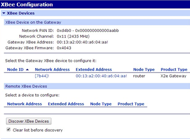
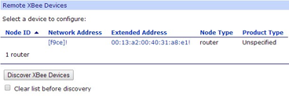
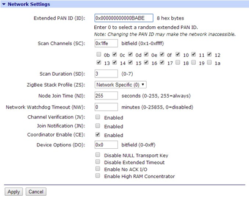
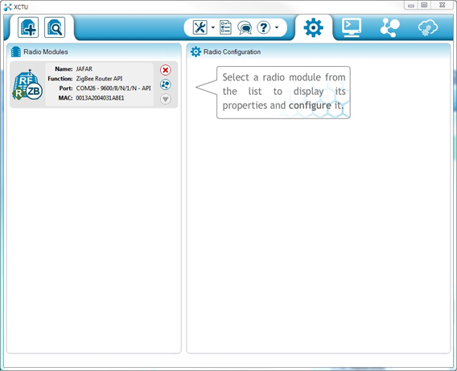
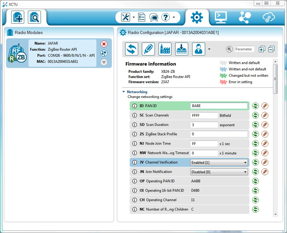
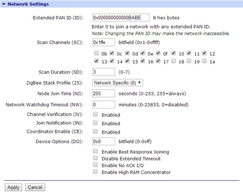

This section covers basic concepts regarding the XBee radio modules. As XBee Gateway and related documentation refers to these concepts frequently, it is important to understand them.
Contents:
- XBee Concepts
- RF modules
- XBee RF modules
- Radio firmware
- Radio communication protocols
- Radio module operating modes
- Application Transparent (AT) operating mode
- AT Command mode
- API operating mode
- API escaped operating mode
- Escape character
- API frames
- AT settings or commands
- ZigBee protocol concepts
- ZigBee nodes
- Coordinators
- Routers
- End devices
- Example ZigBee nodes
- Creating and joining ZigBee networks
- PAN ID
- Channel
- Create a ZigBee Network
- Using a custom PAN ID
- Configure the XBee Gateway with a custom PAN ID
- Configure other ZigBee nodes with a custom PAN ID
- Join an existing ZigBee network
XBee Concepts
Following are key concepts for XBee devices.
RF modules
A radio frequency (RF) module is a small electronic circuit used to transmit and receive radio signals on different frequencies. Digi produces a wide variety of RF modules to meet the requirements of almost any wireless solution, such as long-range, low-cost, etc. The most popular wireless products are the XBee RF modules.
XBee RF modules
XBee is the brand name of a family of RF modules produced by Digi. XBee RF modules are modular products that make deploying wireless technology easy and cost-effective. Multiple protocols and RF features are available, giving customers enormous flexibility to choose the best technology for their needs.
The XBee RF modules are available in two form-factors: Through-Hole and Surface Mount, with different antenna options. Almost all modules are available in the Through-Hole form factor and share the same footprint.
Radio firmware
Radio firmware is the program code stored in the radio module's persistent memory that provides the control program for the device. From the local WEB interface of the XBee Gateway, you can update or change the firmware of the local XBee module or any other module connected to the same network as the local one. This is a common task when changing the role of the device or use the latest version of a firmware.
Radio communication protocols
A radio communication protocol is a set of rules for data exchange between radio devices. Depending on the hardware radio firmware on an XBee module, the XBee modules support a specific radio communication protocol. Following is the complete list of protocols supported by the XBee radio modules:
- IEEE 802.15.4
- ZigBee
- ZigBee Smart Energy
- DigiMesh (Digi’s proprietary)
- ZNet
- IEEE 802.11 (Wi-Fi)
- Point-to-multipoint (Digi’s proprietary)
- XSC (XStream Compatibility)
- Note
- all the XBee devices can run all these communication protocols. The combination of XBee hardware and radio firmware determines the protocol that an XBee device can execute. Refer to the XBee RF Family Comparison Matrix for more information about the available XBee RF modules and the protocols they support.
Radio module operating modes
The operating mode of an XBee radio module establishes the way a user or any microcontroller attached to the XBee communicates with the module through the Universal Asynchronous Receiver/Transmitter (UART) or serial interface.
Depending on the firmware and its configuration, the radio modules can work in three different operating modes:
- AT (transparent) operating mode
- API operating mode
- API escaped operating mode
In some cases, the operating mode of a radio module is established by the firmware version, which determines whether the operating mode is AT or API, and the AP setting of the firmware, which determines if the API mode is escaped (AP=2) or not (AP=1). In other cases, the operating mode is only determined by the AP setting, which allows you for configure the mode to be AT (AP=0), API (AP=1) or API escaped (AP=2).
Application Transparent (AT) operating mode
In Application Transparent (AT) or transparent operating mode, all serial data received by the radio module is queued up for RF transmission. When RF data is received by the module, the data is sent out though the serial interface.
To configure an XBee module operating in AT, put it in AT Command mode to send the configuration commands.
AT Command mode
When the radio module is working in AT operating mode, settings are configured using the AT Command mode interface. To enter AT command mode, you must send the 3-character command sequence through the serial interface of the radio module, usually +++, within one second. Once the AT command mode has been established, the module sends the reply OK\r, the command mode timer is started, and the radio module can receive AT commands.
The structure of an AT command follows:
AT[ASCII command][Space (optional)] [Parameter (optional)][Carriage return]
Example:
If no valid AT commands are received within the command mode timeout, the radio module automatically exits AT Command mode. You can also exit command mode issuing the CN command (ATCN\r).
API operating mode
Application Programming Interface (API) operation mode is an alternative to AT mode. This requires that communication with the module be done through a structured interface; in other words, data is communicated in API frames. For more information about API frames, see API frames.
The API specifies how commands, command responses, and module status messages are sent and received from the module using the serial interface. API operation mode enables many operations such as the following:
- Configuration of the XBee module itself.
- Configuration of remote modules in the network.
- Data management and transmission to multiple destinations.
- Receive success/failure status of each transmitted RF packet.
- Identify the source address of each received packet.
Depending on the AP parameter value, the radio module can operate in one of two modes: API (AP=1 ) or API escaped (AP=2) operating mode.
API escaped operating mode
API escaped operating mode (AP = 2) works similarly to API mode. The only difference is that when working in API escaped mode, some bytes of the API frame specific data must be escaped.
API escaped operating mode is used to add reliability to the RF transmission avoiding conflicts with special characters such as the start-of-frame byte (0x7E). Since 0x7E can only appear at the start of an API packet, if 0x7E is received at any time, it can be assumed that a new packet has started regardless of length. In API escaped mode, those special bytes are escaped.
Escape character
When sending or receiving an API frame in API escaped mode, specific data values must be escaped (flagged) so they do not interfere with the data frame sequence. To escape a data byte, insert 0x7D and follow it with the byte to be escaped XOR'd with 0x20. The data bytes that need to be escaped are as follows:
- 0x7E: Frame Delimiter
- 0x7D: Escape
- 0x11: XON
- 0x13: XOFF
API frames
An API frame is the structured data sent and received through the serial interface of the radio module when it is configured in API or API escaped operating modes. API frames are used to communicate with the module or with other modules in the network.
An API frame has the following structure:
Where:
- Start delimiter: This field is always 0x7E
- Length: The length field has a two-byte value that specifies the number of bytes that will be contained in the frame data field. It does not include the checksum field.
- Frame Data: The content of this field is composed by the API identifier and the API identifier specific data. Depending on the API identifier (also called API frame type), the content of the specific data will change.
- Note
- There are many API frame types or identifiers. The XCTU application includes an embedded tool called Frames Generator that helps you to build and fill any type of API frame. If you do not have XCTU installed, go to http://www.digi.com/xctu to download and install it.
- Checksum: Byte containing the hash sum of the API frame bytes.
In API escaped mode, there may be some bytes in the Length, Frame Data and Checksum fields that need to be escaped.
AT settings or commands
The firmware running in the XBee RF modules contains a set of settings and commands that can be configured to change the behavior of the module or to perform any action related with it. Depending on the protocol, the number of settings and their meanings varies, but all the XBee RF modules can be configured with AT commands.
All the firmware settings or commands are identified with two ASCII characters and some applications and documents refer to them as AT settings or AT commands.
The configuration process of these AT settings varies depending on the operating mode of the XBee RF module.
- AT operating mode. In this mode, you must put the module in a special mode called AT Command mode, so it can receive AT commands. For more information about configuring XBee RF modules in AT operating mode, see AT Command mode.
- API operating mode. To configure or execute AT commands when the XBee RF module operates in API mode, must generate an AT Command API frame containing the AT setting identifier and the value of that setting and send it to the XBee RF module. For more information about API frames, see API frames.
ZigBee protocol concepts
ZigBee is a wireless mesh network protocol for low-power digital radio modules. The ZigBee protocol defines a network layer above the 802.15.4 layers to support advanced mesh routing capabilities. It allows for creating and organizing the network hierarchy providing some extra communication features such as encryption and authentication. Through the mesh and routing capabilities, ZigBee allows the transmission of data over long distances by passing the data through intermediate nodes to more distant ones. Features of the ZigBee protocol include:
- Support for multiple network topologies such as point-to-point, point-to-multipoint and mesh networks.
- Low duty cycle, which promotes long battery life.
- Low latency.
- Direct Sequence Spread Spectrum (DSSS).
- Up to 65,000 nodes per network.
- 128-bit AES encryption for secure data connections.
- Collision avoidance, retries and acknowledgements.
- Note
- This documentation does not cover the ZigBee protocol in detail. For more information about the ZigBee protocol, see the ZigBee Specification Overview on the ZigBee Alliance websitepage for an in-depth explanation.
ZigBee nodes
The ZigBee protocol defines three types of nodes: Coordinators, Routers, and End Devices, with a requirement of one Coordinator per network. While all nodes can send and receive data, there are differences in the specific roles they play.
Coordinators
Coordinators are the most capable of the three node types. There is exactly one coordinator in each network and it is the device that establishes the network originally. A coordinator store information about the network, including security keys, but it cannot be battery-powered (that is, it cannot sleep) because it must store the packets for end device nodes.
Routers
Routers act as intermediate nodes, relaying data from other devices. Routers can connect to other devices and with the coordinator, but, as with the coordinator, they cannot sleep because they must store the packets for end devices. Routers are commonly used to extend the network.
End devices
End Devices, usually sensors, can be low-power / battery-powered devices. They have sufficient functionality to talk to their parent devices, either the coordinator or a router, and cannot relay data from other devices. This reduced functionality allows for the potential to reduce cost.
Example ZigBee nodes
The following figure displays a topology example of a ZigBee network.
Creating and joining ZigBee networks
ZigBee networks are called Personal Area Networks or PANs. In the ZigBee protocol, the only node that can start a new network is the coordinator. For that reason, each ZigBee network must have one coordinator.
To start a network, the coordinator must automatically choose a PAN identifier (PAN ID) and the operating channel for that network. Once those parameters are established and the network is initialized, the coordinator and routers can allow other devices (other routers or end devices) to join the network and can route data.
PAN ID
Each network is defined with a unique PAN identifier (PAN ID). This identifier is common among all devices of the same network. This is, devices on the same ZigBee network must share the same PAN ID in order to communicate each other. This PAN ID is established by the coordinator when it is creating the new network. When the coordinator is powered on, it automatically selects a PAN ID or uses a pre-configured one to identify the network that it will start.
If a coordinator is configured with PAN ID 0, it performs a PAN scan to identify nearby ZigBee networks and uses a random unused PAN ID to start the new network.
If a router or end device is configured with PAN ID 0, it performs a PAN scan and tries to join to the first ZigBee network it finds.
Channel
The 802.15.4 PHY (physical layer) protocol description defines 16 operating channels in the 2.4 GHz frequency band. Before starting the network, the coordinator automatically performs a channel scan to select a good channel to use for the network.
All the ZigBee nodes in a network can be configured with the channel or channels on which they operate.
Create a ZigBee Network
As explained previously, to create a ZigBee network you need a coordinator, which is the node type that starts the network itself. The XBee Gateway includes a built-in XBee ZB node already configured as coordinator. Therefore, as soon as you power on the XBee Gateway ZB device, your ZigBee network is initialized.
By default, the ZigBee coordinator in the XBee Gateway ZB device is configured with a PAN ID 0. That setting means that the coordinator selects a random, unused PAN ID for the network. The XBee Gateway also is configured to use any of the 16 channels, so the coordinator can perform a channel scan and choose the best one for the network.
The XBee Gateway Cloud Kit also includes an XBee ZB module configured as router node. This means that you should be able to connect the XBee ZB module to the network initialized by the XBee Gateway. By default, the PAN ID of this ZigBee module is configured to 0. Therefore, if you power on the XBee ZB module and there is not any other ZigBee network around, the module should join the ZigBee network initialized by the XBee Gateway automatically. This joining operation is indicated when the Association LED of the board on which the XBee ZB module is mounted starts blinking.
To verify that your XBee ZB module has successfully joined the ZigBee network started by the XBee Gateway ZB device, follow these steps:
- Make sure the XBee Gateway is powered on. Make sure the XBee ZB node is mounted on the development board and that the development board is powered on.
- In an Internet browser open the Home page of your XBee Gateway. In the list of links on the left side, under Configuration, click XBee Network. The XBee Configuration page is displayed.
- Just below the Remote XBee Devices table, check the Clear list before discovery option and click the Discover XBee Devices button. 
- After some seconds the table should display your XBee ZB node. 
Using a custom PAN ID
In some cases, you want to have control over the PAN ID used to create your ZigBee network. Having this control is useful when there are some other networks around and you do not want your router or end device nodes to join them. In such cases, you need to specify a custom PAN ID and configure the coordinator, routers and end devices to use it.
Configure the XBee Gateway with a custom PAN ID
The first device to configure with a custom PAN ID is the coordinator, which in this case is the XBee Gateway. Follow these steps to change the PAN ID of your XBee Gateway:
- In an Internet browser, open the Home page of your XBee Gateway ZB and go to the XBee Network section from the left menu.
- Select the XBee Gateway local XBee device to configure it.
- In the XBee Configuration page, open the Network Settings section. There, configure the Extended PAN ID (ID) option with your custom PAN ID value. Remember this value, as you will configure the other ZigBee nodes of the network with the same one. 
- Click Apply to save the changes in the device.
After applying the changes, the coordinator initializes the ZigBee network with the new PAN ID. If you had any other ZigBee nodes connected to the network, you must update their PAN IDs so they will join the new one.
Configure other ZigBee nodes with a custom PAN ID
If you want your ZigBee routers or end devices to connect to a ZigBee network with a specific PAN ID, you must configure them to update the PAN ID they have configured with the new one. As they are not joined to the network that your XBee Gateway (coordinator) initialized, you cannot configure them using the XBee Gateway ZB web interface. In this case, you must use the XCTU software.
If you do not have XCTU installed, go to http://www.digi.com/xctu to download and install it.
Once you have XCTU installed, follow these steps to change the PAN ID of an XBee ZB module, that is, the module that comes with the XBee Gateway ZB Cloud Kit:
- Attach the XBee ZB node to the XBee development board included in the kit, and connect it to your PC using a USB cable.
- Open XCTU and add the XBee node you have just connected to your PC to the list of radio modules. 
- Select the node and wait for the application to read all its settings.
- At the right side of the XCTU display, under the Networking category, there should be a setting called ID PAN ID. In this setting, replace the current PAN ID with your custom PAN ID. 
- Once you have changed the setting, click the Write radio settings button to save the new PAN ID in the XBee module.
As soon as you save the new PAN ID in the XBee RF module, the module tries to connect to the ZigBee network that has the PAN ID that you configured.
Join an existing ZigBee network
Although it is not a very common task, you can configure your XBee Gateway device to operate as a router and join an existing network. To do so, follow these steps:
- In an Internet browser, open the Home page of your XBee Gatewayand go to the XBee Network section from the left menu.
- Select the XBee Gateway ZB local XBee device to configure it.
- In the XBee Configuration page, open the Network Settings section. There, configure the Extended PAN ID (ID) option with the PAN ID of the network to which the XBee Gateway should join.

- In the same page, uncheck the setting Coordinator Enable (CE). This causes the XBee Gateway to behave as a router node within the ZigBee network. 
- Click Apply to save the changes in the device.
After applying the changes, the XBee Gateway behaves as a router node and tries to connect to the ZigBee network with the PAN ID that you configured.
To join your XBee ZB module from the kit to an existing network, you should follow the same steps described in the Configure other ZigBee nodes with a custom PAN ID section.
Source : XBee™ Gateway User's Guide